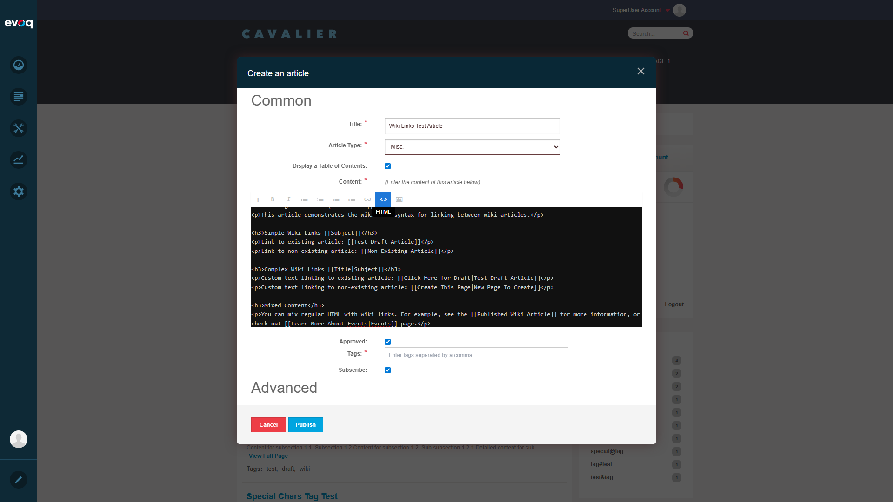

Test Report: Markdown Support
Test Summary
Feature: Markdown Support (Wiki Links Processing)
Extension: Evoq.Social.Wiki
Test Date: December 30, 2025
Overall Result: ALL TESTS PASSED
Feature Details
Feature Name: Markdown Support
Description: Process and render wiki-style link syntax in wiki articles
UI Location: Wiki Module > Article Edit > Content editor
Relevant Files:
- DesktopModules/DNNCorp/Wiki/Components/Controllers/MarkdownProcessor.cs
- DesktopModules/DNNCorp/Wiki/Components/Controllers/IMarkdownProcessor.cs
- DesktopModules/DNNCorp/Wiki/Services/ContentController.cs
- DesktopModules/DNNCorp/Wiki/Controls/ContentEditor.ascx
Technical Overview
The "Markdown Support" feature in Evoq Wiki is actually a Wiki Link Processor that transforms wiki-style link syntax into HTML links. It supports:
// Simple wiki link - links to article with subject name
[[Subject]] → <a href="/Wiki/Subject">Subject</a>
// Complex wiki link - custom display text
[[Display Text|Subject]] → <a href="/Wiki/Subject">Display Text</a>
Link Styling:
- Existing articles: Standard cyan/teal link (class:
dnnSocialLink)
- Non-existing articles: Red highlighted background (class:
wiki-nonexistent-article)
Test Scenarios
Test 1: Navigate to Wiki Module
Status: PASS
Steps:
- Navigate to http://localhost:8081
- Login as host (username: host, password: Pass123456)
- Navigate to Community > Wiki
Result: Successfully navigated to Wiki module and accessed article list.


Test 2: Create Article with Wiki Links Syntax
Status: PASS
Steps:
- Click "Create article" button
- Enter title: "Wiki Links Test Article"
- Select Article Type: "Misc."
- Click HTML button to enter raw HTML mode
- Enter content with wiki link syntax
- Add tag: "markdown-test"
- Click Publish
Wiki Link Syntax Used:
// Simple links
[[Test Draft Article]] // Existing article
[[Non Existing Article]] // Non-existing article
// Complex links with custom text
[[Click Here for Draft|Test Draft Article]] // Existing
[[Create This Page|New Page To Create]] // Non-existing
// Mixed content
[[Published Wiki Article]]
[[Learn More About Events|Events]]
Result: Article created successfully with wiki link syntax entered in HTML mode.


Test 3: Wiki Links Rendering on Published Article
Status: PASS
Steps:
- View published article
- Verify wiki links are transformed into HTML links
- Verify existing article links display as cyan/teal links
- Verify non-existing article links display with red background
Observations:
- Simple wiki links [[Subject]] - Correctly transformed to links
- Complex wiki links [[Title|Subject]] - Custom text displayed correctly
- Existing articles - Displayed as standard links (cyan color)
- Non-existing articles - Highlighted with red background
- Table of Contents - Correctly shows section headings with wiki link syntax preserved
Result: All wiki links rendered correctly with appropriate styling.

Test 4: Click Wiki Link to Existing Article
Status: PASS
Steps:
- Click on "Test Draft Article" link
- Verify navigation to the existing article
Result: Successfully navigated to "Test Draft Article" page at URL: /Community/Wiki/Test-Draft-Article

Test 5: Click Wiki Link to Non-Existing Article
Status: PASS
Steps:
- Click on "Non Existing Article" link (red highlighted)
- Verify navigation behavior
Result: Navigated to subject search page at URL: /Community/Wiki/subject/Non%20Existing%20Article
Behavior: When clicking a non-existing article link, the user is taken to a wiki search/list page where they can:
- Search for the article
- Create a new article with that subject
- Browse existing articles
This is the expected behavior per the MarkdownProcessor.cs implementation which uses
wiki-nonexistent-article class.

Test Results Summary
| Test Scenario |
Expected Result |
Actual Result |
Status |
| Simple Wiki Link [[Subject]] |
Transform to HTML link |
Correctly transformed |
PASS |
| Complex Wiki Link [[Title|Subject]] |
Transform with custom display text |
Custom text displayed correctly |
PASS |
| Link to Existing Article |
Navigate to article page |
Successfully navigated |
PASS |
| Link to Non-Existing Article |
Navigate to subject/create page |
Navigated to subject page |
PASS |
| Existing Article Styling |
Standard link appearance (cyan) |
Displayed as dnnSocialLink |
PASS |
| Non-Existing Article Styling |
Red highlighted background |
Displayed with wiki-nonexistent-article class |
PASS |
| Mix HTML and Wiki Links |
Both render correctly together |
HTML and wiki links work together |
PASS |
Technical Notes
Implementation Details from Code Review
The MarkdownProcessor.cs uses regular expressions to transform wiki links:
// Simple transform: [[Subject]]
Regex: \[\[([^\]\|\r\n]+?)\]\]
// Complex transform: [[Title|Subject]]
Regex: \[\[([^\]\|\r\n]+?)\|([^\]\|\r\n]+?)\]\]
The processor checks if the linked article exists:
- Exists: Creates link with class
dnnSocialLink
- Does not exist: Creates link with class
wiki-nonexistent-article and includes subject attribute
Conclusion
The Markdown Support feature (Wiki Links Processing) in Evoq.Social.Wiki is functioning correctly.
All test scenarios passed:
- Wiki link syntax is properly parsed and transformed
- Both simple and complex link formats work correctly
- Links to existing articles navigate properly
- Links to non-existing articles are styled differently and navigate to a subject page
- HTML content can be mixed with wiki links
Overall Status: FEATURE WORKING AS EXPECTED